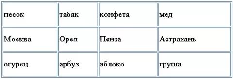

Тема: Таблицы.
Самостоятельное задание.
- Зайдите папку, куда вы сохраняете все файлы своего сайта.
- Откройте свой файл со своим сайтом
- Запустите программу Блокнот.(Можно использовать любой текстовой редактор)
-
реализуйте таблицу
- Сохраните файл
- Для просмотра Web-страницы используйте любой браузер (Google Chrome,Internet Explorer, Opera, Mozilla Firefox или другой). Для этого, не покидая программу Блокнот (сверните окно на панель задач), откройте личную папку и двойным кликом по файлу index.HTML откройте окно браузера.
Таблица которую нужно создать
